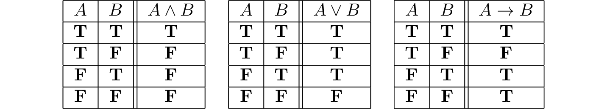
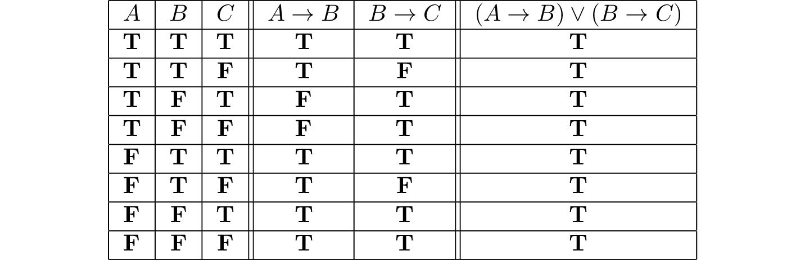

6. Semantics of Propositional Logic¶
Classically, we think of propositional variables as ranging over statements that can be true or false. And, intuitively, we think of a proof system as telling us what propositional formulas have to be true, no matter what the variables stand for. For example, the fact that we can prove \(C\) from the hypotheses \(A\), \(B\), and \(A \wedge B \to C\) seems to tell us that whenever the hypotheses are true, then \(C\) has to be true as well.
Making sense of this involves stepping outside the system and giving an account of truth—more precisely, the conditions under which a propositional formula is true. This is one of the things that symbolic logic was designed to do, and the task belongs to the realm of semantics. Formulas and formal proofs are syntactic notions, which is to say, they are represented by symbols and symbolic structures. Truth is a semantic notion, in that it ascribes a type of meaning to certain formulas.
Syntactically, we were able to ask and answer questions like the following:
Given a set of hypotheses, \(\Gamma\), and a formula, \(A\), can we derive \(A\) from \(\Gamma\)?
What formulas can be derived from \(\Gamma\)?
What hypotheses are needed to derive \(A\)?
The questions we consider semantically are different:
Given an assignment of truth values to the propositional variables occurring in a formula \(A\), is \(A\) true or false?
Is there any truth assignment that makes \(A\) true?
Which are the truth assignments that make \(A\) true?
In this chapter, we will not provide a fully rigorous mathematical treatment of syntax and semantics. That subject matter is appropriate to a more advanced and focused course on mathematical logic. But we will discuss semantic issues in enough detail to give you a good sense of what it means to think semantically, as well as a sense of how to make pragmatic use of semantic notions.
6.1. Truth Values and Assignments¶
The first notion we will need is that of a truth value. We have already seen two, namely, “true” and “false.” We will use the symbols \(\mathbf{T}\) and \(\mathbf{F}\) to represent these in informal mathematics. These are the values that \(\top\) and \(\bot\) are intended to denote in natural deduction, and true and false are intended to denote in Lean.
In this text, we will adopt a “classical” notion of truth, following our discussion in Section 5. This can be understood in various ways, but, concretely, it comes down to this: we will assume that any proposition is either true or false (but, of course, not both). This conception of truth is what underlies the law of the excluded middle, \(A \vee \neg A\). Semantically, we read this sentence as saying “either \(A\) is true, or \(\neg A\) is true.” Since, in our semantic interpretation, \(\neg A\) is true exactly when \(A\) is false, the law of the excluded middle says that \(A\) is either true or false.
The next notion we will need is that of a truth assignment, which is simply a function that assigns a truth value to each element of a set of propositional variables. In this section, we will distinguish between propositional variables and arbitrary formulas by using letters \(P, Q, R, \ldots\) for the former and \(A, B, C, \ldots\) for the latter. For example, the function \(v\) defined by
\(v(P) := \mathbf{T}\)
\(v(Q) := \mathbf{F}\)
\(v(R) := \mathbf{F}\)
\(v(S) := \mathbf{T}\)
is a truth assignment for the set of variables \(\{ P, Q, R, S \}\).
Intuitively, a truth assignment describes a possible “state of the world.” Going back to the Malice and Alice puzzle, let’s suppose the following letters are shorthand for the statements:
\(P\) := Alice’s brother was the victim
\(Q\) := Alice was the killer
\(R\) := Alice was in the bar
In the world described by the solution to the puzzle, the first and third statements are true, and the second is false. So our truth assignment gives the value \(\mathbf{T}\) to \(P\) and \(R\), and the value \(\mathbf{F}\) to \(Q\).
Once we have a truth assignment \(v\) to a set of propositional variables, we can extend it to a valuation function \(\bar v\), which assigns a value of true or false to every propositional formula that depends only on these variables. The function \(\bar v\) is defined recursively, which is to say, formulas are evaluated from the bottom up, so that value assigned to a compound formula is determined by the values assigned to its components. Formally, the function is defined as follows:
\(\bar v(\top) = \mathbf{T}\).
\(\bar v(\bot) = \mathbf{F}\).
\(\bar v(\ell) = v(\ell)\), where \(\ell\) is any propositional variable.
\(\bar v(\neg A) = \mathbf{T}\) if \(\bar v(A)\) is \(\mathbf{F}\), and vice versa.
\(\bar v(A \wedge B) = \mathbf{T}\) if \(\bar v(A)\) and \(\bar v(B)\) are both \(\mathbf{T}\), and \(\mathbf{F}\) otherwise.
\(\bar v(A \vee B) = \mathbf{T}\) if at least one of \(\bar v(A)\) and \(\bar v(B)\) is \(\mathbf{T}\); otherwise \(\mathbf{F}\).
\(\bar v(A \to B) = \mathbf{T}\) if either \(\bar v(B)\) is \(\mathbf{T}\) or \(\bar v(A)\) is \(\mathbf{F}\), and \(\mathbf{F}\) otherwise. (Equivalently, \(\bar v(A \to B) = \mathbf{F}\) if \(\bar v(A)\) is \(\mathbf{T}\) and \(\bar v(B)\) is \(\mathbf{F}\), and \(\mathbf{T}\) otherwise.)
The rules for conjunction and disjunction are easy to understand. “\(A\) and \(B\)” is true exactly when \(A\) and \(B\) are both true; “\(A\) or \(B\)” is true when at least one of \(A\) or \(B\) is true.
Understanding the rule for implication is trickier. People are often surprised to hear that any if-then statement with a false hypothesis is supposed to be true. The statement “if I have two heads, then circles are squares” may sound like it ought to be false, but by our reckoning, it comes out true. To make sense of this, think about the difference between the two sentences:
“If I have two heads, then circles are squares.”
“If I had two heads, then circles would be squares.”
The second sentence is an example of a counterfactual implication. It asserts something about how the world might change, if things were other than they actually are. Philosophers have studied counterfactuals for centuries, but mathematical logic is concerned with the first sentence, a material implication. The material implication asserts something about the way the world is right now, rather than the way it might have been. Since it is false that I have two heads, the statement “if I have two heads, then circles are squares” is true.
Why do we evaluate material implication in this way? Once again, let us consider the true sentence “every natural number that is prime and greater than two is odd.” We can interpret this sentence as saying that all of the (infinitely many) sentences in this list are true:
If 0 is prime and greater than 2, then 0 is odd.
If 1 is prime and greater than 2, then 1 is odd.
If 2 is prime and greater than 2, then 2 is odd.
If 3 is prime and greater than 2, then 3 is odd.
…
The first sentence on this list is a lot like our “two heads” example, since both the hypothesis and the conclusion are false. But since it is an instance of a statement that is true in general, we are committed to assigning it the value \(\mathbf{T}\). The second sentence is a different: the hypothesis is still false, but here the conclusion is true. Together, these tell us that whenever the hypothesis is false, the conditional statement should be true. The fourth sentence has a true hypothesis and a true conclusion. So from the second and fourth sentences, we see that whenever the conclusion is true, the conditional should be true as well. Finally, it seems clear that the sentence “if 3 is prime and greater than 2, then 3 is even” should not be true. This pattern, where the hypothesis is true and the conclusion is false, is the only one for which the conditional will be false.
Let us motivate the semantics for material implication another way, using the deductive rules described in the last chapter. Notice that, if \(B\) is true, we can prove \(A \to B\) without any assumptions about \(A\):
This follows from the proper reading of the implication introduction rule: given \(B\), one can always infer \(A \to B\), and then cancel an assumption \(A\), if there is one. If \(A\) was never used in the proof, the conclusion is simply weaker than it needs to be. This inference is validated in Lean:
variables A B : Prop
variable hB : B
example : A → B :=
assume hA : A,
show B, from hB
Similarly, if \(A\) is false, we can prove \(A \to B\) without any assumptions about \(B\):
In Lean:
variables A B : Prop
variable hnA : ¬ A
example : A → B :=
assume hA : A,
show B, from false.elim (hnA hA)
Finally, if \(A\) is true and \(B\) is false, we can prove \(\neg (A \to B)\):
Once again, in Lean:
variables A B : Prop
variable hA : A
variable hnB : ¬B
example : ¬ (A → B) :=
assume h : A → B,
have hB : B, from h hA,
show false, from hnB hB
Now that we have defined the truth of any formula relative to a truth assignment, we can answer our first semantic question: given an assignment \(v\) of truth values to the propositional variables occurring in some formula \(\varphi\), how do we determine whether or not \(\varphi\) is true? This amounts to evaluating \(\bar v(\varphi)\), and the recursive definition of \(\varphi\) gives a recipe: we evaluate the expressions occurring in \(\varphi\) from the bottom up, starting with the propositional variables, and using the evaluation of an expression’s components to evaluate the expression itself. For example, suppose our truth assignment \(v\) makes \(A\) and \(B\) true and \(C\) false. To evaluate \((B \to C) \vee (A \wedge B)\) under \(v\), note that the expression \(B \to C\) comes out false and the expression \(A \wedge B\) comes out true. Since a disjunction “false or true” is true, the entire formula is true.
We can also go in the other direction: given a formula, we can attempt to find a truth assignment that will make it true (or false). In fact, we can use Lean to evaluate formulas for us. In the example that follows, you can assign any set of values to the proposition symbols A, B, C, D, and E. When you run Lean on this input, the output of the eval statement is the value of the expression.
-- Define your truth assignment here
def A := tt
def B := ff
def C := tt
def D := tt
def E := ff
def test (p : Prop) [decidable p] : string :=
if p then "true" else "false"
#eval test ((A ∧ B) ∨ ¬ C)
#eval test (A → D)
#eval test (C → (D ∨ ¬E))
#eval test (¬(A ∧ B ∧ C ∧ D))
Try varying the truth assignments, to see what happens. You can add your own formulas to the end of the input, and evaluate them as well. Try to find truth assignments that make each of the formulas tested above evaluate to true. For an extra challenge, try finding a single truth assignment that makes them all true at the same time.
6.2. Truth Tables¶
The second and third semantic questions we asked are a little trickier than the first. Given a formula \(A\), is there any truth assignment that makes \(A\) true? If so, which truth assignments make \(A\) true? Instead of considering one particular truth assignment, these questions ask us to quantify over all possible truth assignments.
Of course, the number of possible truth assignments depends on the number of propositional letters we’re considering. Since each letter has two possible values, \(n\) letters will produce \(2^n\) possible truth assignments. This number grows very quickly, so we’ll mostly look at smaller formulas here.
We’ll use something called a truth table to figure out when, if ever, a formula is true. On the left hand side of the truth table, we’ll put all of the possible truth assignments for the present propositional letters. On the right hand side, we’ll put the truth value of the entire formula under the corresponding assignment.
To begin with, truth tables can be used to concisely summarize the semantics of our logical connectives:
We will leave it to you to write the table for \(\neg A\), as an easy exercise.
For compound formulas, the style is much the same. Sometimes it can be helpful to include intermediate columns with the truth values of subformulas:
By writing out the truth table for a formula, we can glance at the rows and see which truth assignments make the formula true. If all the entries in the final column are \(\mathbf{T}\), as in the above example, the formula is said to be valid.
6.3. Soundness and Completeness¶
Suppose we have a fixed deduction system in mind, such as natural deduction. A propositional formula is said to be provable if there is a formal proof of it in that system. A propositional formula is said to be a tautology, or valid, if it is true under any truth assignment. Provability is a syntactic notion, in that it asserts the existence of a syntactic object, namely, a proof. Validity is a semantic notion, in that it has to do with truth assignments and valuations. But, intuitively, these notions should coincide: both express the idea that a formula \(A\) has to be true, or is necessarily true, and one would expect a good proof system to enable us to derive the valid formulas.
The statement that every provable formula is valid is known as soundness. If \(A\) is any formula, logicians use the notation \(\vdash A\) to express the fact that \(A\) is provable and the notation \(\vDash A\) to express that \(A\) is valid. (The first symbol is sometimes called a “turnstile” and the second symbol is sometimes called a “double-turnstile.”) With this notation, soundness says that for every propositional formula \(A\), if \(\vdash A\), then \(\vDash A\). The converse, which says that every valid formula is provable, is known as completeness. In symbolic terms, it says that for every formula \(A\), if \(\vDash A\), then \(\vdash A\).
Because of the way we have chosen our inference rules and defined the notion of a valuation, this intuition that the two notions should coincide holds true. In other words, the system of natural deduction we have presented for propositional logic is sound and complete with respect to truth-table semantics.
These notions of soundness and completeness extend to provability from hypotheses. If \(\Gamma\) is a set of propositional formulas and \(A\) is a propositional formula, then \(A\) is said to be a logical consequence of \(\Gamma\) if, given any truth assignment that makes every formula in \(\Gamma\) true, \(A\) is true as well. In this extended setting, soundness says that if \(A\) is provable from \(\Gamma\), then \(A\) is a logical consequence of \(\Gamma\). Completeness runs the other way: if \(A\) is a logical consequence of \(\Gamma\), it is provable from \(\Gamma\). In symbolic terms, we write \(\Gamma \vdash A\) to express that \(A\) is provable from the formulas in \(\Gamma\) (or that \(\Gamma\) proves \(A\)), and we write \(\Gamma \vDash A\) to express that \(A\) is a logical consequence of \(\Gamma\) (or that \(\Gamma\) entails \(A\)). With this notation, soundness says that for every propositional formula \(A\) and set of propositional formulas \(\Gamma\), if \(\Gamma \vdash A\) then \(\Gamma \vDash A\), and completeness says that for every \(A\) and \(\Gamma\), if \(\Gamma \vDash A\) then \(\Gamma \vdash A\).
Given a set of propositional formulas \(\Gamma\) and a propositional formula \(A\), the previous section gives us a recipe for deciding whether \(\Gamma\) entails \(A\): construct a truth tables for all the formulas in \(\Gamma\) and \(A\), and check whether every \(A\) comes out true on every line of the table on which every formula of \(\Gamma\) is true. (It doesn’t matter what happens to \(A\) on the lines where some formula in \(\Gamma\) is false.)
Notice that with the rules of natural deduction, a formula \(A\) is provable from a set of hypotheses \(\{ B_1, B_2, \ldots, B_n \}\) if and only if the formula \(B_1 \wedge B_2 \wedge \cdots \wedge B_n \to A\) is provable outright, that is, from no hypotheses. So, at least for finite sets of formulas \(\Gamma\), the two statements of soundness and completeness are equivalent.
Proving soundness and completeness belongs to the realm of metatheory, since it requires us to reason about our methods of reasoning. This is not a central focus of this book: we are more concerned with using logic and the notion of truth than with establishing their properties. But the notions of soundness and completeness play an important role in helping us understand the nature of the logical notions, and so we will try to provide some hints here as to why these properties hold for propositional logic.
Proving soundness is easier than proving completeness. We wish to show that whenever \(A\) is provable from a set of hypotheses, \(\Gamma\), then \(A\) is a logical consequence of \(\Gamma\). In a later chapter, we will consider proofs by induction, which allows us to establish a property holds of a general collection of objects by showing that it holds of some “simple” ones and is preserved under the passage to objects that are more complex. In the case of natural deduction, it is enough to show that soundness holds of the most basic proofs—using the assumption rule—and that it is preserved under each rule of inference. The base case is easy: the assumption rule says that \(A\) is provable from hypothesis \(A\), and clearly every truth assignment that makes \(A\) true makes \(A\) true. The inductive steps are not much harder; they involve checking that the rules we have chosen mesh with the semantic notions. For example, suppose the last rule is the and-introduction rule. In that case, we have a proof of \(A\) from some hypotheses \(\Gamma\), and a proof of \(B\) from some hypotheses \(\Delta\), and we combine these to form a proof of \(A \wedge B\) from the hypotheses in \(\Gamma \cup \Delta\), that is, the hypotheses in both. Inductively, we can assume that \(A\) is a logical consequence of \(\Gamma\) and that \(B\) is a logical consequence of \(\Delta\). Let \(v\) be any truth assignment that makes every formula in \(\Gamma \cup \Delta\) true. Then by the inductive hypothesis, we have that it makes \(A\) true, and \(B\) true as well. By the definition of the valuation function, \(\bar v (A \wedge B) = \mathbf{T}\), as required.
Proving completeness is harder. It suffices to show that if \(A\) is any tautology, then \(A\) is provable. One strategy is to show that natural deduction can simulate the method of truth tables. For example, suppose \(A\) is build up from propositional variables \(B\) and \(C\). Then in natural deduction, we should be able to prove
with one disjunct for each line of the truth table. Then, we should be able to use each disjunct to “evaluate” each expression occurring in \(A\), proving it true or false in accordance with its valuation, until we have a proof of \(A\) itself.
A nicer way to proceed is to express the rules of natural deduction in a way that allows us to work backward from \(A\) in search of a proof. In other words, first, we give a procedure for constructing a derivation of \(A\) by working backward from \(A\). Then we argue that if the procedure fails, then, at the point where it fails, we can find a truth assignment that makes \(A\) false. As a result, if every truth assignment makes \(A\) true, the procedure returns a proof of \(A\).
6.4. Exercises¶
Show that \(A \to B\), \(\neg A \vee B\), and \(\neg (A \wedge \neg B)\) are logically equivalent, by writing out the truth table and showing that they have the same values for all truth assignments.
Write out the truth table for \((A \to B) \wedge (B \wedge C \to A)\).
Show that \(A \to B\) and \(\neg B \to \neg A\) are equivalent, by writing out the truth tables and showing that they have the same values for all truth assignments.
Does the following entailment hold?
\[\{ A \to B \vee C, \neg B \to \neg C \} \models A \to B\]Justify your answer by writing out the truth table (sorry, it is long). Indicate clearly the rows where both hypotheses come out true.
Are the following formulas derivable? Justify your answer with either a derivation or a counterexample.
\(\neg (\neg A \vee B) \to A\)
\((\neg A \to \neg B) \to (A \to B)\)
\(((P \wedge Q) \to R) \to (R \vee \neg P)\)
\((\neg P \wedge \neg Q) \to \neg (Q \vee P)\)